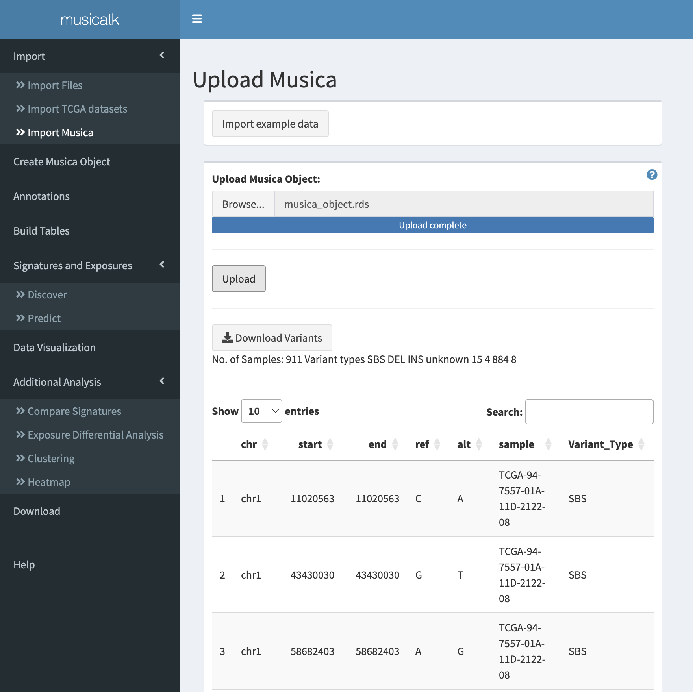
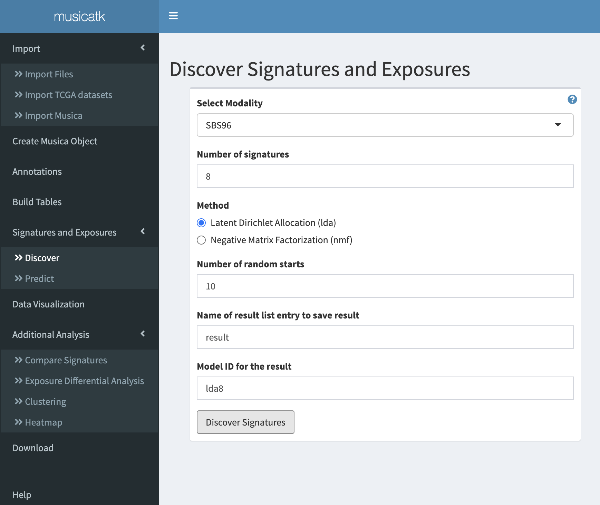
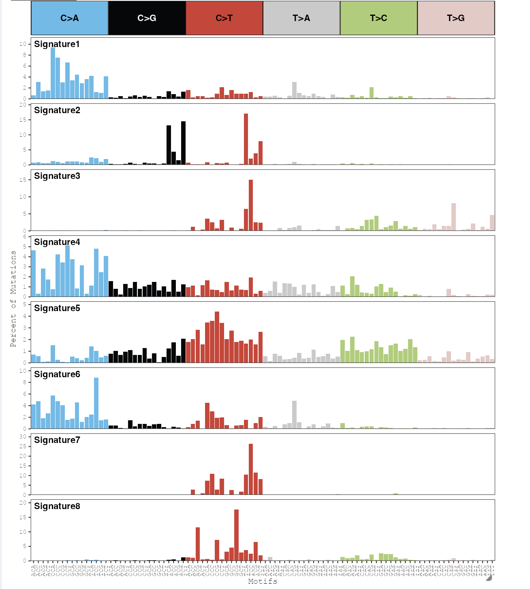
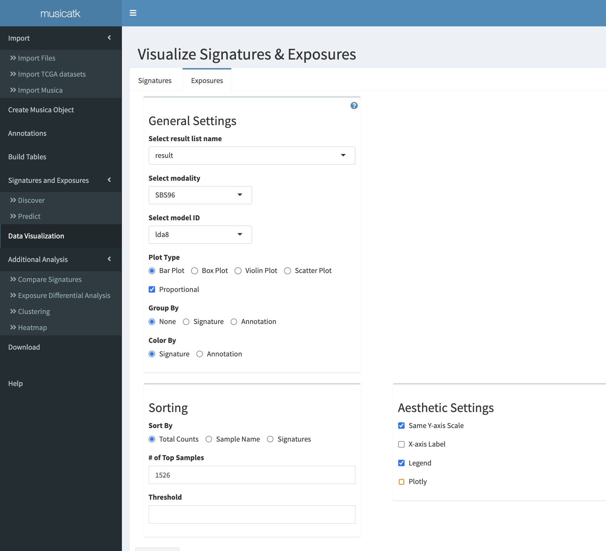
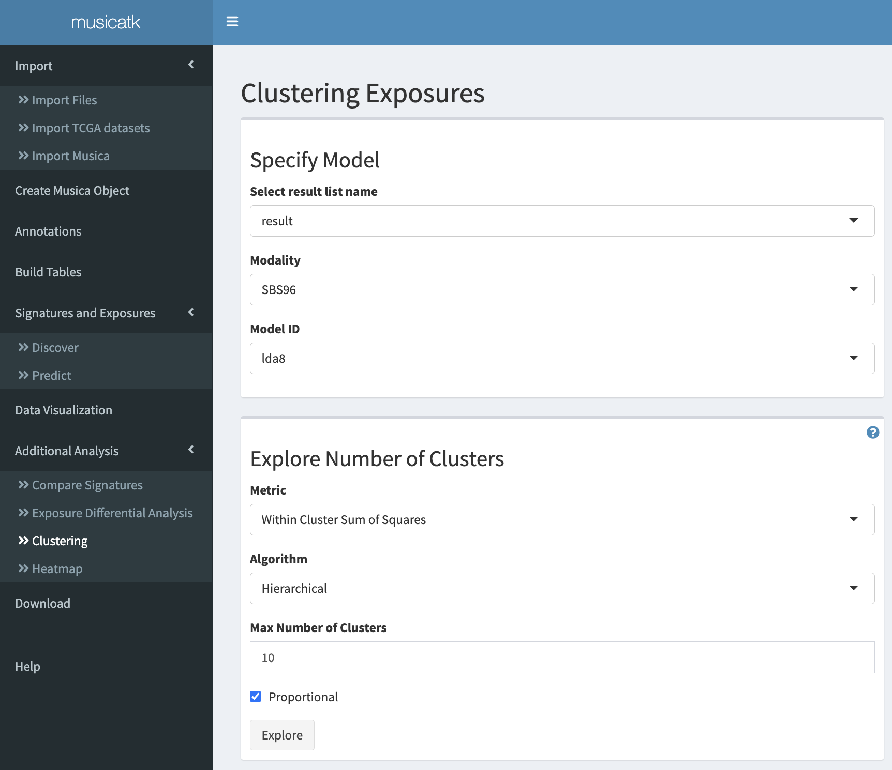

Analysis of mutational signatures with the Shiny graphical user interface (GUI)
Nathan Sahelijo, Zainab Khurshid, Tong Tong, Aaron Chevalier, Joshua Campbell
Compiled September 13, 2021
Source:vignettes/articles/tutorial_tcga_ui.Rmd
tutorial_tcga_ui.RmdIntroduction
A variety of exogenous exposures or endogenous biological processes can contribute to the overall mutational load observed in human tumors. Many different mutational patterns, or “mutational signatures”, have been identified across different tumor types. These signatures can provide a record of environmental exposure and can give clues about the etiology of carcinogenesis. The Mutational Signature Comprehensive Analysis Toolkit (musicatk) contains a complete end-to-end workflow for characterization of mutational signatures in a cohort of samples. musicatk has utilities for extracting variants from a variety of file formats, multiple methods for discovery of novel signatures or prediction of pre-existing signatures, and many types of downstream visualizations for exploratory analysis. This package has the ability to parse and combine multiple motif classes in the mutational signature discovery or prediction processes. Mutation motifs include single base substitutions (SBS), double base substitutions (DBS), insertions (INS) and deletions (DEL). To start the app on your local machine, open RStudio or R in the terminal and type the following in the console:
Importing mutational data
Users can upload their datasets through 1 of 3 different methods. - “Import variants from files” - upload MAF and VCF files containing the variant data. - “Import variants from TCGA” - easily import all open access TCGA tumor datasets. - “Import previously generated musica objects” - upload existing musica and result objects.
Import variants from files
In order to discover or predict mutational signatures, we must first set up our musica object by 1) extracting variants from files or objects such as VCFs and MAFs, 2) selecting the appropriate reference genome 3) creating a musica object, 4) adding sample-level annotations, and 5) building a count tables for our variants of interest. Variants stored in VCF or MAF files can be selected from your computation using the ‘browse’ button under the ‘Select Files’ label.

Clicking the ‘Add Samples’ button will add the files to the list of samples to be imported. The delete and undo button next to the file can be pressed to remove it or revert the change respectively. After adding the files, the ‘Import’ button can be clicked to start the importing process.

Once the process is completed, a notification in the bottom right will appear. A variants table from the uploaded files will also appear which can be downloaded by pressing the ‘Download Variants’ button.

Import TCGA Datasets
This tab allows for selection of single or multiple datasets generated in The Cancer Genome Atlas (TCGA). The original TCGA page for the tumor name list can be referred to by selecting the ‘Full Tumor List’ link on the top. Once the desired datasets have been selected, the ‘Import’ button at the bottom can be clicked to download the TCGA data. It may take some time to download and process all of the selected datasets. Once finished, a completion notification will appear at the bottom right.

Import previously generated musica objects
This tab can be used to import a user’s previously generated musica variant object or a musica result object in .rda or .rds format. . The browse button in the musica result or musica result object can be selected for selecting files. Once selected, a bar saying file upload is completed will appear. By default, the musica result objects will be named after the file’s name but it can be changed in the text box labeled “Name your musica result object”. Once finished, a notification message in the bottom right will appear along with a table of variants. If a musica variant object was uploaded then the users can skip the Create Musica tab and move to the build tables tab directly. If a musica result object was uploaded, then all the downstream tabs will be accessible.

Creating a musica object
In this tab users can process variants and create a musica variant object which can be used for discovery of signatures or prediction of exposures. The reference genome can be selected from the drop down menu labeled “Choose Genome” that matches the genome build of the variants and the ‘Create Musica Object’ button can then be clicked. Once it’s done, a completion notification message at the bottom right and a variant summary table will appear. The musica object can be downloaded by clicking the ‘Download Musica Object’ button and re-uploaded to save time in subsequent sessions.


Importing sample annotations
Sample annotations can be used to store information about each sample such as tumor type or treatment status. They are optional and can be used in downstream plotting functions such as plot_exposures or plot_umap to group or color samples by a particular annotation.

Annotations are sample-level variables such as Tumor Type or Age. These can be provided in a character delimited text file which must include a column containing the sample IDs.

The sample IDs must match the sample names in the musica object. NA values will be given to any samples not present in the annotation file.

After selecting the correct delimiter, a data table will appear below to show the annotations that will be added to the musica object. If your annotation file does not contain a header, unselect the “Header” radio button. Choose the column that contains the sample names from the “Sample Name Columns” dropdown and then click “Add Annotation”.

# Creating mutation count tables
Create standard tables
The “Build Tables” tab generates count tables for different mutation schemas. These schemas are the input to the mutational signature discovery and prediction functions. To build the count tables, the user must select 1 of the 5 standard motifs in the “Select Count Table” dropdown.
SBS96 - Motifs are the six possible single base pair mutation types times the four possibilities each for upstream and downstream context bases (464 = 96 motifs)
SBS192_Trans - Motifs are an extension of SBS96 multiplied by the transcriptional strand (translated/untranslated), can be specified with “Transcript_Strand”.
SBS192_Rep - Motifs are an extension of SBS96 multiplied by the replication strand (leading/lagging), can be specified with “Replication_Strand”.
DBS - Motifs are the 78 possible double-base-pair substitutions.
INDEL - Motifs are 83 categories intended to capture different categories of indels based on base-pair change, repeats, or microhomology, insertion or deletion, and length.
In addition to selecting a motif, the user must also provide the reference genome.


Estimating signatures and exposures
The user has the option of discovering novel signatures and exposures, or using previously discovered signatures to predict exposures. To discover signatures use the “Discover” tab. To predict signature exposures, use the “Predict” tab.
Discovery of signatures and exposures
Mutational signatures and exposures are discovered using a Latent Dirichlet Allocation (LDA) or a Non-Negative Matrix Factorization (NMF) algorithms. These algorithms will deconvolute the mutation count matrix into two matrices: 1) a “signature” matrix containing the probability of each mutation type in each sample and 2) an “exposure” matrix containing the estimated counts for each signature in each sample. Select a count table, algorithm, number of signatures, and specify the name of the result and then click “Discover signatures”.

Predicting exposures from existing signatures
Exposures for samples can be predicted using an existing set of signatures stored in a musica result object. Algorithms available for prediction include “lda”, “decompTumor2Sig”, and “deconstructSigs”. Note that “deconstructSigs” can only work with variants stored in hg19 format.

The “Signatures to Predict” dropdown contains all the signatures in the result object selected from the “Result to Predict” dropdown. You can search this dropdown and select multiple signatures. In our example we use the “lda” algorithm to predict exposures of 6 Cosmic signatures.

Visualization of results
The data visualization tab can be used to generate customized plots for signatures and exposures. Plots will be made interactive if the “plotly” option is selected.
Plot signatures
Bar plots can be used to display the probability of each type of mutation within each signature.

Previously, 8 single-base signatures were identified from a cohort of lung adenocarcinoma, lung squamous cell carcinoma, and skin cutaneous melanoma samples from TCGA. By default, signatures are named by numbers, but an option of renaming signatures is provided if you want to rename them according to their possible etiology (e.g. Smoking) or closest correlation to COSMIC (e.g. SBS4).

Plot exposures
Bar plots, box plots, violin plots and scatter plots can be used to visualize the exposure levels of each signature in each sample.

By default, a stacked bar plot sorted by the total number of mutations is used. Each stacked bar shows the proportion of exposure of each signature.

The stacked bar plot can be ordered by signatures. If Signatures is selected in the Sort By option, a bucket list will show up to allow you select the signatures you want to use by dragging them from the left box to the right box. Users can also set a limit on the number of samples to display.

This stacked bar plot is now ordered by the exposure of signature 1 and only the top 400 samples were included here.

Box plot and violin plot can be used to visualize the distribution of exposures or compare exposures between different groups of samples.

By default, a box plot of exposure for each signature will be shown.

If an annotation file is provided, then you can visually compare the exposure of signatures among different groups.

In this box plot, exposures of each signature were grouped by tumor types. We can find that signatures 1 and 5 had high activities in lung cancer samples, while signatures 3 and 8 had high activities in skin cancer samples.

We can also group samples by signatures and then color by tumor types.

This plot can be used to visualize and compare the distribution of exposure levels for signature across an annotation such as tumor type.

Downstream analyses
Compare Signatures
A common analysis is to compare discovered signatures estimated in a dataset to those generated in other datasets or to those in the COSMIC database. The threshold acts as a cutoff similarity score and can be any value between 0 and 1. Results will populate in a downloadable data table.

Using the cosine metric with a threshold of 0.8,7 pairs of similar signatures from COSMIC. Our Signature1 had a high cosine similarity to Cosmic SBS4 indicating that some of our tumors have been exposed to cigarette smoke.

Differential analysis of exposures between groups
The “Exposure Differential Analysis” tab is used to run differential analysis on the signature exposures of annotated samples. There are 3 methods to perform the differential analysis: Wilcoxon Rank Sum Test, Kruskal-Wallis Rank Sum Test, and a negative binomial regression (glm).

The Wilcoxon Rank Sum Test can be used to directly compare two groups of samples. Below we display the Wilcoxon Rank Sum Test results between LUAD and SKCM. Note that LUSC was ignored since it did not have a specified pair.

From our table, we can see several of our signatures are differentially exposed across tumor types. From our comparison analysis, we can hypothesize that signature1 may be related to tobacco smoke, and exposure to tobacco smoke occurs in lung cancers but not skin cancers.

Clustering samples based on exposures
The “Clustering” subtab provides several algorithms from the factoextra and cluster packages to cluster samples based on exposure levels. After selecting the musica result object, it is recommended to use the “Explore Number of Clusters” box to help find the potential number of clusters in your data. (Note: gap statistic may take a longer time to calculate.)

This line plot shows the within cluster sum of squares for each number of clusters predicted using hierarchical clustering. The “elbow” of the curve can be used as a starting place for the cluster number.

The “Clustering” box is where you perform the clustering analysis. In addition to clustering algorithm, several methods for calculating dissimilarity matrix, imported from the philentropy package, are also provided.

This table is the output of clustering analysis, combined with annotation.

In the “Visualization” box, users can make scatter plots to visualize the clustering results on a UMAP panel. Three types of plots are provided.

If “None” is selected, a single scatter plot will be made with points colored by cluster label.

If “Signature” is selected, a subplot is made for each combination of cluster label and signature. Points are colored by the level of the specific signature.

If “Annotation” is selected, an additional select box will show up and let you choose one type of user-supplied annotation of interest. A subplot is generated for each combination of signature and category in the annotation. Points are colored by cluster label.

Heatmap of exposures
Heatmaps can be used to visualize the relative levels of all signatures across tumors in a single plot. Select the result object you want to use for heatmap visualization from the dropdown menu in the start labeled ‘Select Result’. Choose from different settings and press the ‘Plot’ button to visualize the heatmap. Check the ‘Proportional’ option to normalize the levels of signatures within a sample to sum to one. Z-score normalization will scale each signature to have a mean of zero and a standard deviation of one.. You can also show or hide the tumor and signature names by checking or unchecking the ‘Show column names’ and ‘Show row names’, respectively. If you want to display a subset by signatures, click the ‘Selected Signatures’ option and select the signatures to show. You can also select the ‘Samples’ and ‘Annotation’ options to subset by the available samples and annotations.


Download results
You can download your musica object and musica result object from using the respective drop down menus. They will be saved as .rds files which can be reuploaded back into the app at a later time. Select the name of the musica result or musica object that click the Download button to save the file to your computer.